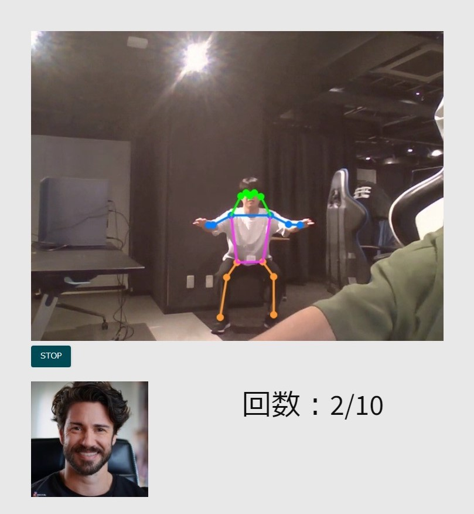

最近の取り組み
現在は高専時代の友人と共に、情報学のオンライン塾の開塾に向けて取り組んでいます。
実際に顧客が利用するホームページを作成する中で、どのようにすれば使いやすく、
集客力あるものを作れるのかを考えるのが大変ではありますが、やりがいを感じています。
塾のホームページ -> TechTune
24時間AIハッカソン
東京24時間AIハッカソン 2024
— 24時間AIハッカソン Powered by GALLERIA (@24aihackathon) September 15, 2024
最後にみんなで記念写真です#LFS池袋 での楽しい2日間？苦しい2日間？刺激的な2日間？ま、兎にも角にもありがとうございました😀😀😀
24時間AIハッカソン Powered by GALLERIA #24aihack pic.twitter.com/aIbYmoMGLs


東京24時間AIハッカソンに参加し、
筋トレAIインストラクターサービス"MotionMentor"を開発しました。
GitHub Repository
過去の取り組み
大学に編入する前は福井高専の電子情報工学科に在籍していました。
そこでは情報学およびソフトウェア、ハードウェアについて幅広く学び、
プログラミングの基礎を学びました。卒業研究では量子コンピュータについての研究をし、
シミュレータの作成およびドイチェ-ジョサのアルゴリズムの検証を行いました。
シミュレータ-> GitHub
スキル・学習期間
- Python: 3年
- C言語: 4年
- HTML: 1年
- CSS: 半年
- JavaScript: 半年
趣味
趣味はバスケットボールです。中学から10年間続けています。